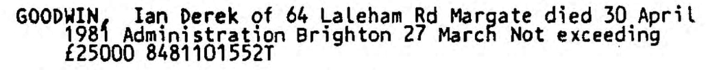
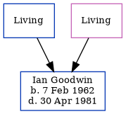

Ian Derek Goodwin 1962 - 1981 [ Home ] | [ Calendar ] | [ Surnames Index ] | [ Family History ]The son of Peter Goodwin and Mavis Cowell Ian Goodwin , the first cousin once-removed on the mother's side of Nigel Horne , was born in Thanet, Kent, England on 7 Feb 19621,2,3 . In 1981, he lived on 64 Laleham Road, Margate, Kent, England.
He died on 30 Apr 1981 in Thanet2,4,5 .
Parents Peter S Mavis E Citations England & Wales births 1837-2006 - Findmypast England & Wales deaths 1837-2007 - Findmypast England & Wales, Birth Index: 1916-2005 Online publication - Provo, UT, USA: The Generations Network, Inc., 2008.Original data - General Register Office. England and Wales Civil Registration Indexes. London, England: General Register Office. © Crown copyright. Published by permission of the Cont England & Wales Government Probate Death Index 1858-2019 - Findmypast England & Wales, National Probate Calendar (Index of Wills and Administrations) Media Ian Goodwin - Probate  England & Wales births 1837-2006 - BMD/B/1962/1/AZ/000637/006 England & Wales deaths 1837-2007 - BMD/D/1981/3/AZ/000383/095 England & Wales Government Probate Death Index 1858-2019 - GBOR/GOVPROBATE/C/1984-1984/00089383 Family Tree Map
Generated by ged2site . Last updated on Feb 19, 2025